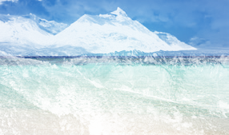
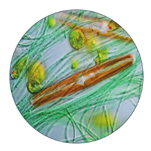
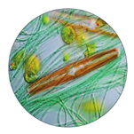

1.2 La hidrosfera
Tres cuartas partes de la superficie de la Tierra están cubiertas por agua; sin embargo, esta se extiende en una delgada lámina de 4 km de espesor.
La hidrosfera es el agua que existe cerca de la superficie terrestre en forma de hielo, agua líquida y vapor de agua.

Propiedades del agua
- Puntos de fusión y ebullición elevados: La temperatura a la que se funde el hielo y la temperatura a la que hierve el agua son elevadas. Esto hace posible que la mayoría del agua de la hidrosfera esté en estado líquido y permita la vida en la Tierra.
- Buen disolvente: El agua tiene la capacidad de disolver una gran variedad de sustancias. Esta propiedad es importante para los seres vivos, ya que los procesos que tienen lugar en las células se dan entre sustancias disueltas en agua.
- Variación anómala del volumen: El hielo flota sobre el agua, lo que permite a los seres vivos acuáticos sobrevivir bajo el hielo cuando se acumula en la superficie de ríos, lagos y mares.
- Elevada tensión superficial: La superficie del agua forma una lámina resistente que algunas plantas e insectos aprovechan para flotar y desplazarse sobre ella.
- Elevada capacidad calorífica: El agua almacena mucho calor sin cambiar su temperatura, por ello es un excelente regulador térmico de los seres vivos y del planeta.
 
